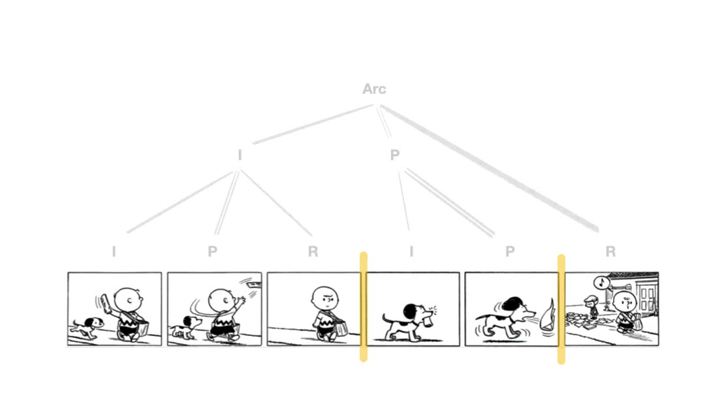
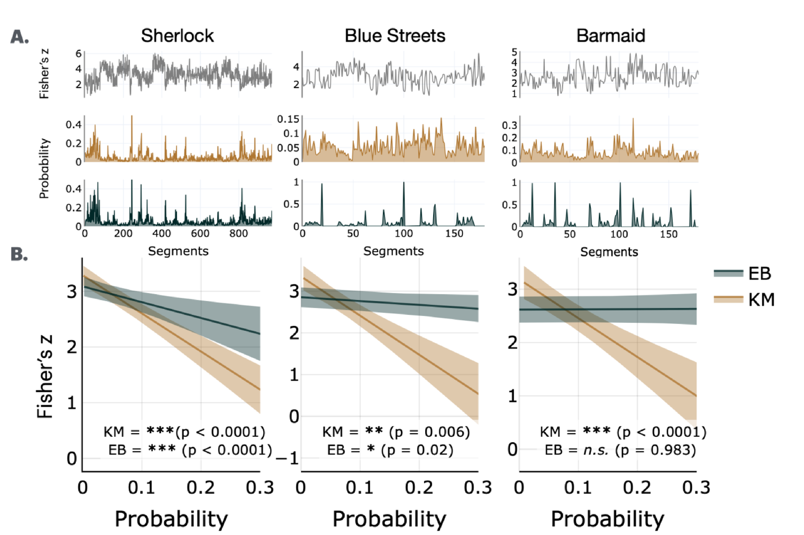

How is information organized?¶
Key moments are not scattered at random through an experience; they land where a story turns. That suggests the structures we usually associate with language — hierarchy, syntax, thematic arc — are organizing far more than sentences. Here I borrow tools from psycholinguistics and NLP to ask what that structure is, and what makes a moment matter within it.

Does visual narrative comprehension involve a grammar? From cave paintings to murals, visual storytelling has long existed as a communicative tool. When comprehending visual narratives, do we parse them using a grammar, similar to that of language? Read more →
What makes a moment key? Semantic information. Key moments scaffold the semantic structure in narratives. Cut the key moments out of a narrative, the story's meaning collapses. Read more →